Best Paper Award
AAAI Spring Symposium, 2024.
Generative and Multimodal Intelligence
Assistant Professor, School of Electrical and Computer Engineering
Oklahoma State University
Dr. Saeed Vahidian is an Assistant Professor in the School of Electrical and Computer Engineering at Oklahoma State University. Before joining OSU, he completed his postdoctoral research at Duke University, where he worked with Prof. Yiran Chen, Director of the NSF AI Institute for Edge Computing (Athena).
He received his Ph.D. in Electrical and Computer Engineering from the University of California San Diego under the supervision of Prof. Bill Lin.
His research lies at the intersection of multimodal learning, large language models, generative AI, agentic AI, synthetic data, and robust learning. He develops reliable and efficient learning systems that connect foundational AI research with real-world applications.
I am recruiting students to work on multimodal learning, LLMs, generative AI, and agentic AI. View application details →
My group develops principled and practical AI methods that learn from multiple modalities, generate useful data, remain robust under distribution shifts, and act reliably in complex environments.
Building models that integrate vision, language, audio, and structured signals, with an emphasis on cross-modal reasoning, alignment, data efficiency, and generalization.
Developing efficient and reliable foundation models, controllable generative systems, multimodal synthetic-data pipelines, and methods that improve how large models learn and adapt.
Designing AI agents that reason, plan, use tools, collaborate, and learn from feedback while remaining dependable, interpretable, and aligned with their intended objectives.
Studying robust optimization, dataset distillation, synthetic data, federated learning, and efficient inference under limited data, compute, communication, and privacy budgets.
AAAI Spring Symposium, 2024.
Organizer and Chair, Dataset Distillation for Computer Vision Workshop, CVPR 2024.
For the most current record, visit my Google Scholar profile.
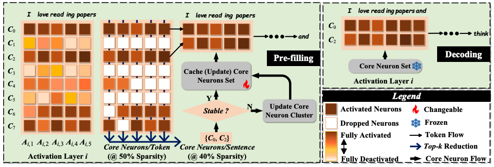
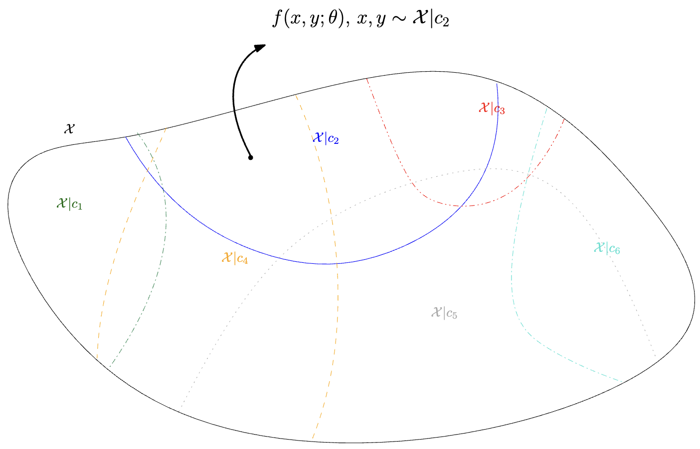
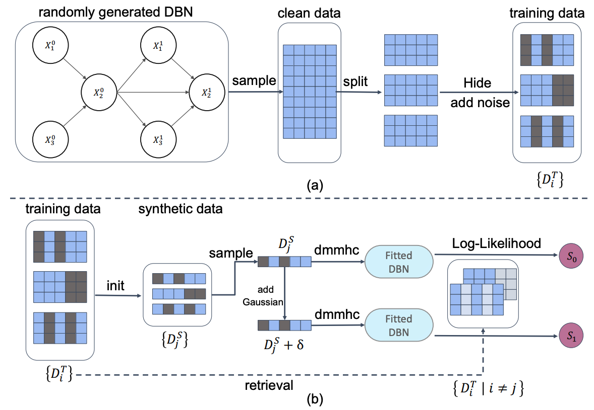
Journal of Machine Learning Research, 2025
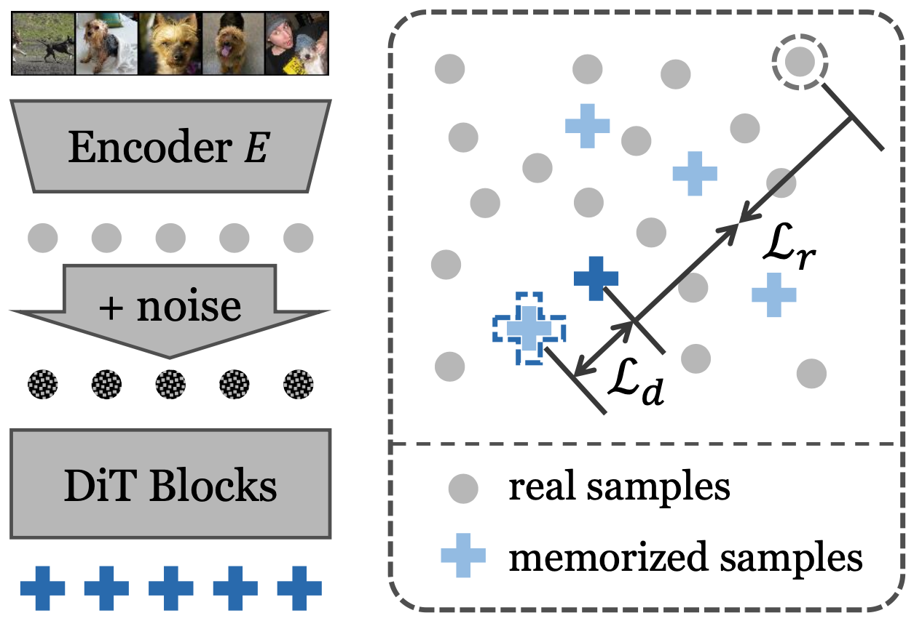
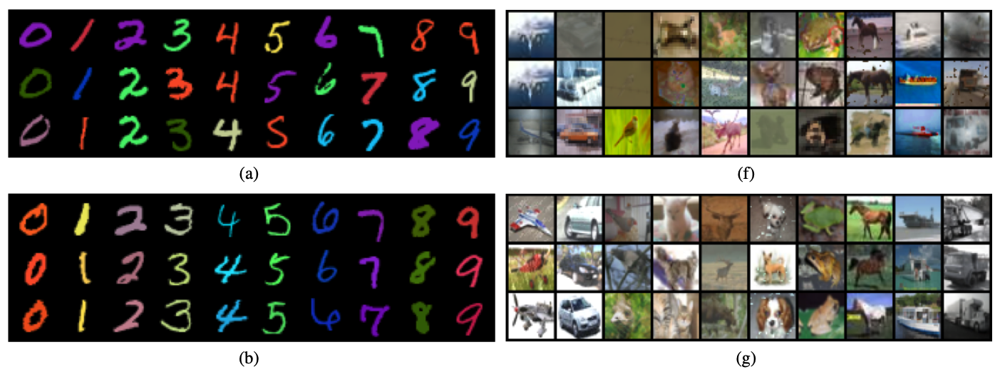
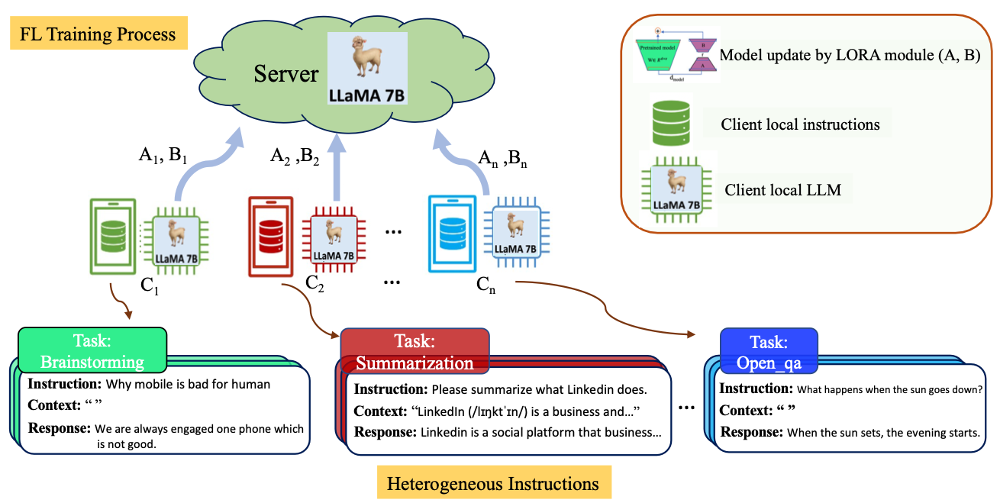
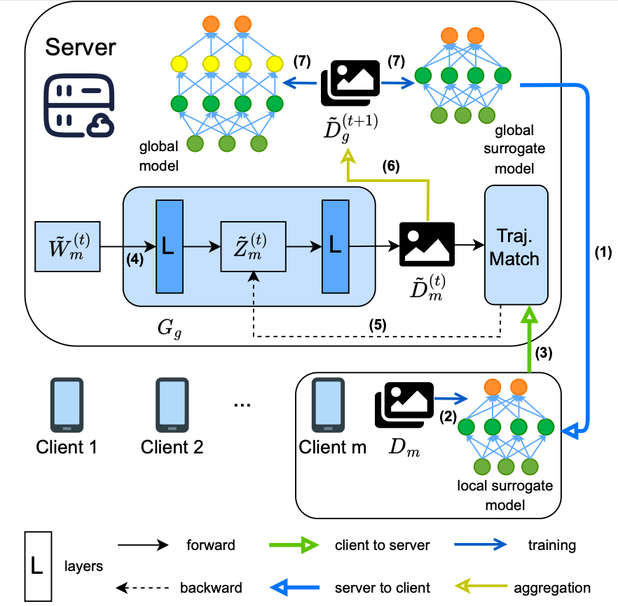
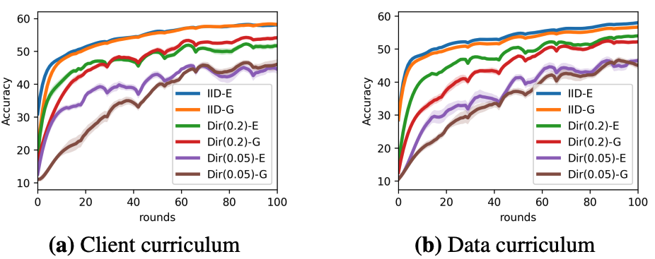
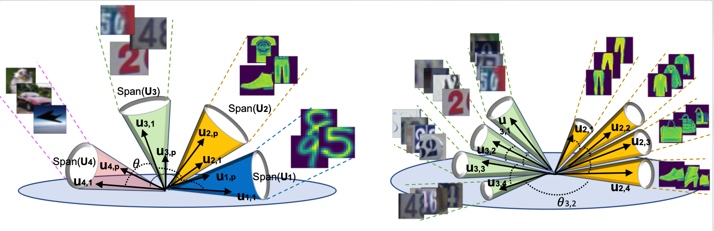
AAAI 2023
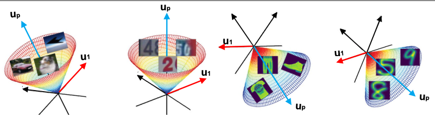
IEEE Transactions on Artificial Intelligence, 2023
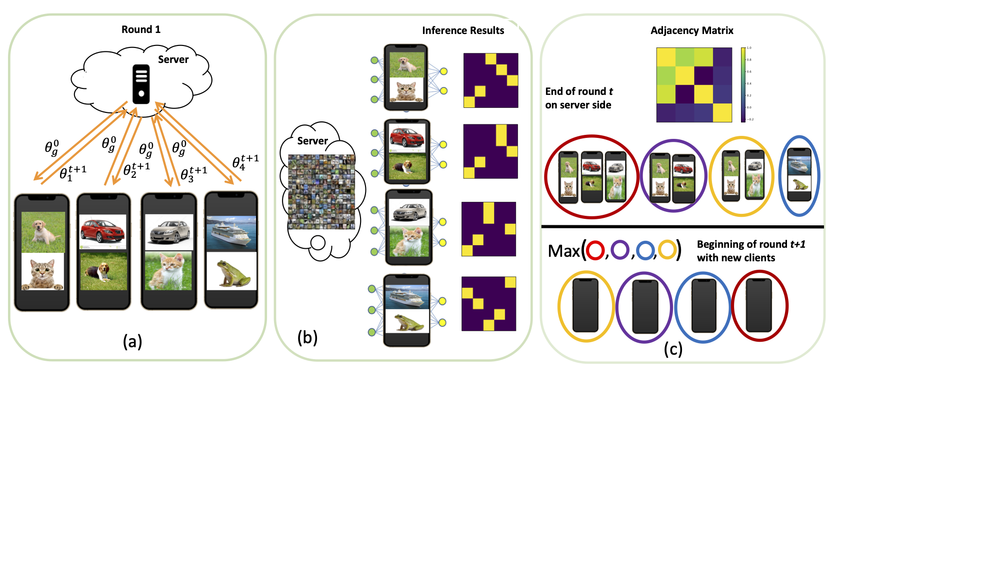
IEEE Open Journal of the Computer Society, 2023
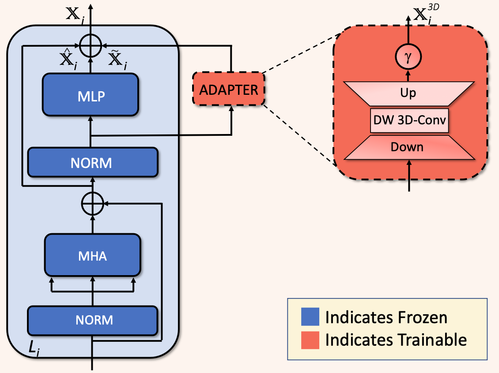
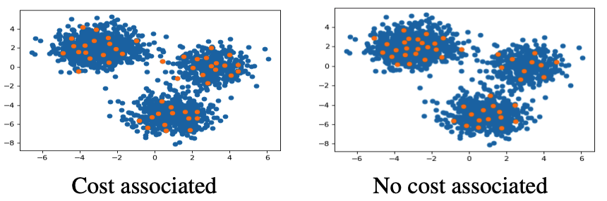
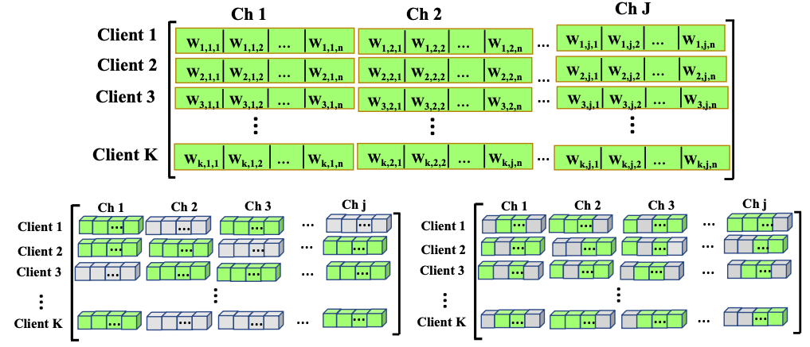
IEEE ICDCS Workshops, 2021 · Conference Award
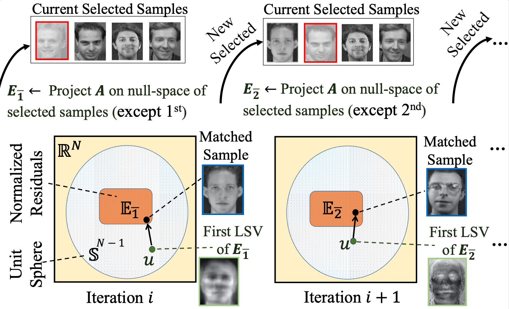
CVPR 2020
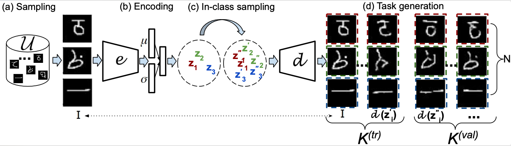
Oklahoma State University, Fall 2026. A system-level introduction to modern intelligent systems spanning machine learning, deep learning, LLMs, generative AI, and responsible deployment.
Guest lectures and instruction in special topics in computer engineering, differential equations, linear algebra, calculus, and numerical linear algebra.
Primary Organizer and Chair, first Dataset Distillation for Computer Vision Workshop at CVPR 2024; Co-Organizer and Chair, third FedVision Workshop at CVPR 2024.
Reviewer for ICML, NeurIPS, CVPR, and IEEE journals, including IEEE Transactions on Communications and IEEE Transactions on Vehicular Technology.
Ph.D. Openings
I am seeking highly motivated students interested in:
Applicants should have a strong background—or demonstrated research interest—in machine learning, deep learning, computer vision, natural language processing, or a related field. Strong programming and mathematical skills are expected; experience with Python and PyTorch is highly desirable.
Please email your CV, academic transcripts, a brief description of your research interests, and links to relevant publications, projects, or GitHub repositories.
Email application materials